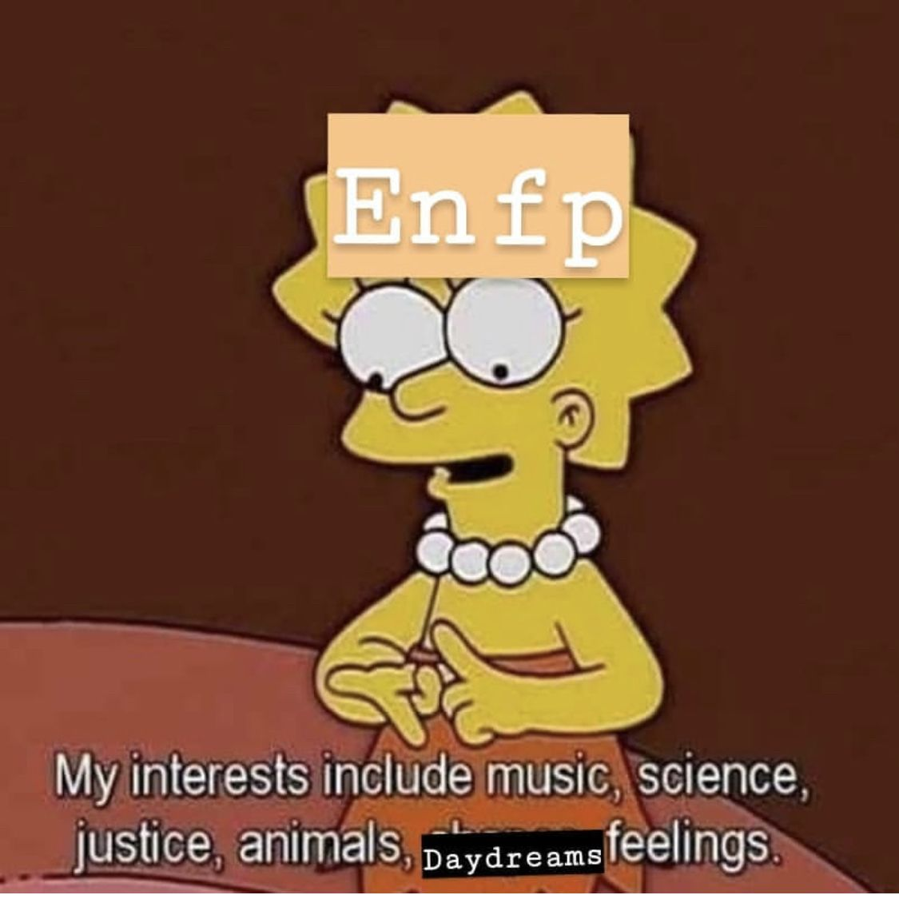
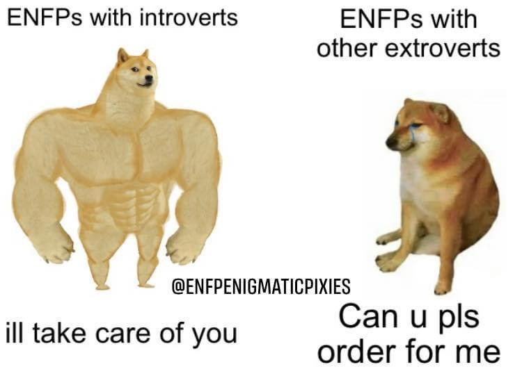
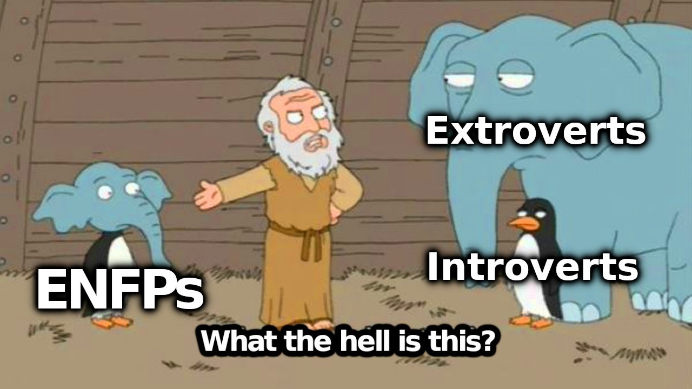
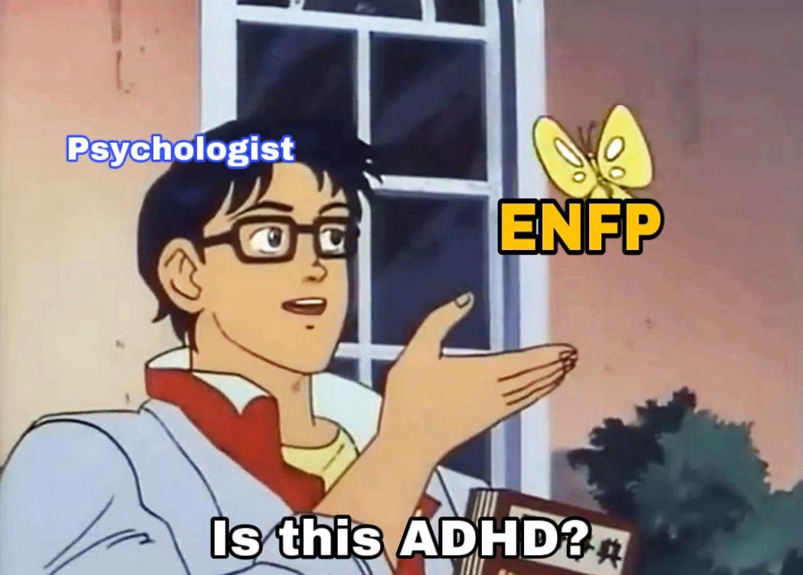
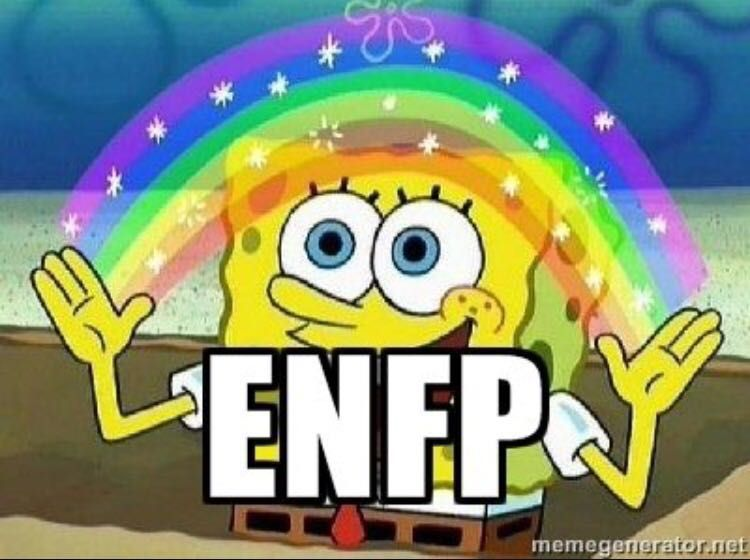
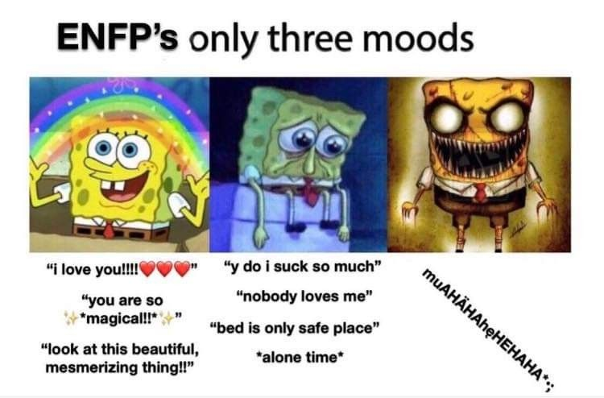
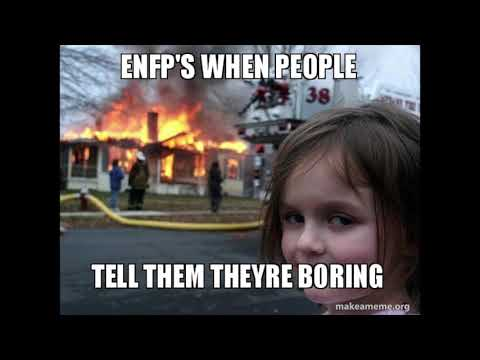
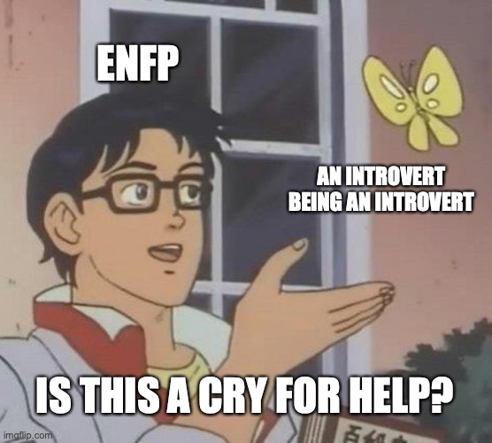
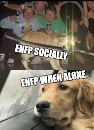

ENFP
A Campaigner (ENFP) is someone with the Extraverted, Intuitive, Feeling, and Prospecting personality traits. These people tend to embrace big ideas and actions that reflect their sense of hope and goodwill toward others. Their vibrant energy can flow in many directions. It doesn't interest me what you do for a living.
Campaigners (ENFPs) are true free spirits: outgoing, openhearted, and open-minded. With their lively, upbeat approach to life, they stand out in any crowd. But even though they can be the life of the party, Campaigners donot just care about having a good time. These personality types run deep as does their longing for meaningful, emotional connections with other people.
The Magic of Everyday Life
Friendly and outgoing, Campaigners are devoted to enriching their relationships and their social lives. But beneath their sociable, easygoing exteriors, they have rich, vibrant inner lives as well. Without a healthy dose of imagination, creativity, and curiosity, a Campaigner simply wouldnot be a Campaigner. In their unique way, Campaigners can be quite introspective. They cannot help but ponder the deeper meaning and significance of life:even when they should be paying attention to something else. These personalities believe that everything, and everyone is connected, and they live for the glimmers of insight that they can gain into these connections.
When something sparks their imagination, Campaigners can show an enthusiasm that is nothing short of infectious. These personalities radiate a positive energy that draws in other people, and Campaigners may find themselves being held up by their peers as a leader or guru. But once the initial bloom of inspiration wears off, Campaigners can struggle with self-discipline and consistency, losing steam on projects that once meant so much to them.
Seeking Joy
Campaigners are proof that seeking out life’s joys and pleasures isn’t the same as being shallow. Seemingly in the blink of an eye, people with this personality type can transform from impassioned idealists to carefree figures on the dance floor.
Even in moments of fun, Campaigners want to connect emotionally with others. Few things matter more to these personality types than having genuine, heartfelt conversations with the people they cherish. Campaigners believe that everyone deserves to express their feelings, and their empathy and warmth create spaces where even the most timid spirits can feel comfortable opening up.
People with this personality type need to be careful, however. Campaigners’ intuition may lead them to read far too much into other people’s actions and behaviors. Instead of simply asking for an explanation, Campaigners may end up puzzling over someone else’s desires or intentions. This kind of social stress is what keeps harmony-focused Campaigners awake at night.
        